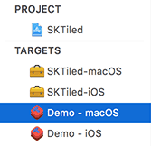
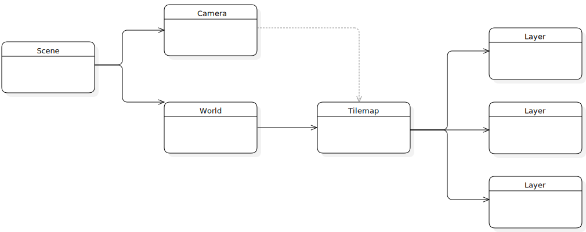
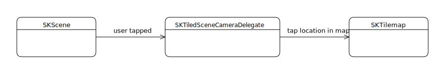
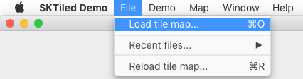

View on GitHub
View on GitHub Install in Dash
Install in Dash Scene Setup Reference
Scene Setup Reference
Setting Up Your Scenes
Using Tiled assets in your projects is very straightforward with SKTiled. There are several tools included that allow you to easily access and customize content for your game.
SKTilemapDelegate Protocol
The SKTilemapDelegate protocol is provided to allow you to access (and change) your content as it is being created. It is recommended that your SpriteKit scenes conform to this protocol.
In addition to the callback methods, the protocol allows you to substitute your own classes for the default tile, vector and pathfinding objects.
protocol SKTilemapDelegate {
// Called when the map is instantiated.
func didBeginParsing(_ tilemap: SKTilemap)
// Called when a tileset is about to be render a spritesheet.
func willAddSpriteSheet(_ tileset: SKTileset, fileNamed: String) -> String
// Called when a tileset has been added.
func didAddTileset(_ tileset: SKTileset)
// Called when a layer has been added.
func didAddLayer(_ layer: SKTiledLayerObject)
// Called before layers begin rendering.
func didReadMap(_ tilemap: SKTilemap)
// Called when layers are finished rendering.
func didRenderMap(_ tilemap: SKTilemap)
// Tile object type for use with tile layers.
func objectForTile(named: String?) -> SKTile.Type
// Vector object type for use with object groups.
func objectForVector(named: String?) -> SKTileObject.Type
// Navigation graph node type.
func objectForGraph(named: String?) -> GKGridGraphNode.Type
}
Scene Setup
Setting up scenes is straightforward. Tile maps should be loaded during the SKScene.didMove(to:) method, and updated during the SKScene.update(_:) method.
A basic scene setup could be as simple as:
class GameScene: SKScene {
var tilemap: SKTilemap!
override func didMove(to view: SKView) {
// load a named map
if let tilemap = SKTilemap.load(tmxFile: "myTiledFile") {
addChild(tilemap)
// center the tilemap in the scene
tilemap.position.x = (view.bounds.size.width / 2.0)
tilemap.position.y = (view.bounds.size.height / 2.0)
self.tilemap = tilemap
}
}
override func update(_ currentTime: TimeInterval) {
// update tilemap
self.tilemap?.update(currentTime)
}
}
If you choose to implement the SKTilemapDelegate protocol, you can utilize as many callback methods as you see fit (they are optional):
class GameScene: SKScene, SKTilemapDelegate {
var tilemap: SKTilemap!
override func didMove(to view: SKView) {
if let tilemap = SKTilemap.load(fromFile: "myTiledFile", delegate: self) {
// add the tilemap to the scene
addChild(tilemap)
// center the tilemap in the scene
tilemap.position.x = (view.bounds.size.width / 2.0)
tilemap.position.y = (view.bounds.size.height / 2.0)
self.tilemap = tilemap
}
}
func didRenderMap(_ tilemap: SKTilemap) {
// finish setting up map here
if let obstaclesLayer = tilemap.objectGroup(named: "Obstacles") {
obstaclesLayer.isHidden = true
obstaclesLayer.setupPhysics()
}
}
override func update(_ currentTime: TimeInterval) {
// update tilemap
self.tilemap?.update(currentTime)
}
}
Custom Tile Objects
It is possible to use your own custom tile sprite objects in your projects. Subclass the built-in SKTile object and make it available in your scenes allows you to use different tile type for different scenes.
class MainMenuScene: SKScene, SKTilemapDelegate {
/// use a custom tile type for the main menu
func objectForTile(named: String?) -> SKTile.Type {
return MenuButtonTile.self
}
}
See the Extending section for more details.
SKTilesetDataSource Protocol
The SKTilesetDataSource protocol is new as of SKTiled 1.18. Objects conforming to this protocol can specify alternate attributes for a tileset as it is being created.
For example, you can change the spritesheet image name of a tileset before the source file is loaded:
extension SceneManager: SKTilesetDataSource {
func willAddSpriteSheet(to tileset: SKTileset, fileNamed: String) -> String {
if let spritesheetForGameResolution = tileset.properties[gameResolution.rawValue] {
return spritesheetForGameResolution
}
return fileNamed
}
}
You’ll need to make certain that the image you substitute has the same dimensions & layout as the image you are swapping it out for; the tileset will still retain the size and tile count properties defined in Tiled.
Tiled Scene

The included demo scene conforms to the SKTiledSceneDelegate protocol. This protocol outlines a standard game scene setup with a camera that interacts with your tilemaps. The included SKTiledScene class conforms to this protocol and can serve as a template, though you are free to implement your own setups.

public protocol SKTiledSceneDelegate: class {
/// World container node. Tiled assets are parented to this node.
var worldNode: SKNode! { get set }
/// Custom scene camera.
var cameraNode: SKTiledSceneCamera! { get set }
/// Tile map node.
var tilemap: SKTilemap! { get set }
/// Load a tilemap from disk
func load(tmxFile: String) -> SKTilemap?
}
The tilemap is parented to a world container node, which interacts with the included SKTiledSceneCamera object which allows you to easily navigate the scene with mouse & touch events, as well as exchanging data with the scene and tilemaps. The world node is set to 0,0 in the scene by default.
Calling the class method SKTilemap.load(tmxFile:) will initialize a parser to read the file name given.
To see the SKTiledScene in action, compile one of the demo targets and look at the SKTiledDemoScene class.
Tiled Scene Camera

The SKTiledSceneCamera node is a custom SpriteKit camera that interacts with the your scene and any loaded tilemaps. To allow other objects to be notified of camera changes, you need to conform them to the SKTiledSceneCameraDelegate protocol. With this, you will want to implement the following methods:
// all platforms
func cameraPositionChanged(newPosition: CGPoint)
func cameraZoomChanged(newZoom: CGFloat)
func cameraBoundsChanged(bounds: CGRect, position: CGPoint, zoom: CGFloat)
// iOS only
func sceneDoubleTapped(location: CGPoint)
// macOS only
func sceneDoubleClicked(event: NSEvent)
func mousePositionChanged(event: NSEvent)
The methods are all optional, so only create methods for the functions you need.
Adding Delegates
To add your objects as camera delegates, implement the delegate methods you need and add them to the camera’s delegates property:
extension Marker: SKTiledSceneCameraDelegate {
func cameraZoomChanged(newZoom: CGFloat) {
if (newZoom <= minZoom) {
self.redraw(zoom: minZoom)
}
}
}
// create a new object & add it to the camera delegates
let marker = Marker()
cameraNode.addDelegate(marker)
To remove
Loading External Content
The demo project allows you to load and test your own Tiled content (macOS only). Simply compile the macOS demo target and load map from the File menu.

Next: Working with Maps - Index